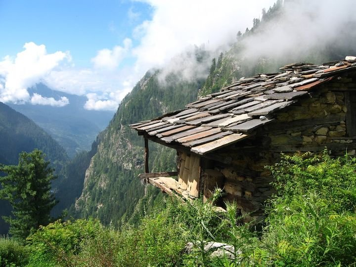
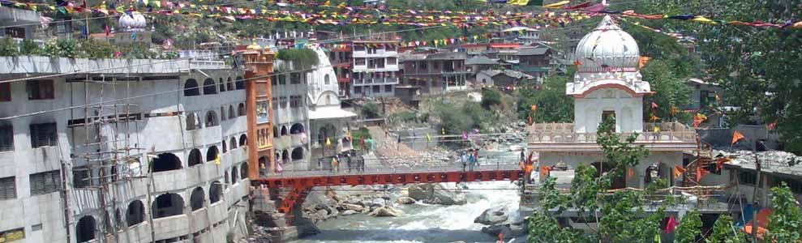
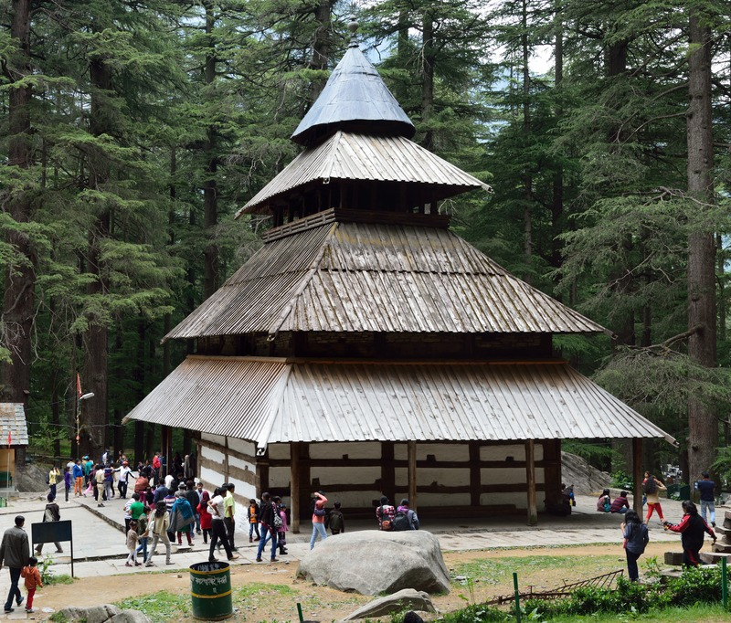

Kullu is a district in Himachal Pradesh, India. The district stretches from the village of Rampur in the south to the Rohtang Pass in the North. The largest valley in the district is called the Kullu Valley, which is also known as the Valley of the Gods. There is also a town called Kullu which sits on the banks of the Beas River in the central part of the valley. Another important valley in the district is the Lug valley where the main forest contractors have been extracting timber from the forests for the last 150 years and continue to do so today. Farther north lies the town of Manali. The ancient seat of the kings of Kullu was at Naggar Castle, about 12 km north of the present town, and thought to have been built in the early 17th century by Raja Sidh Sing. Raja Jagat Singh (1637–72) moved the capital in the middle of the 17th century to its present position, and called it Sultanpur. The Royal compound consists of the "Rupi Palace, several temples, and a long narrow bazaar descending the hill."
Malana is an ancient solitary village in Himachal Pradesh. Known as Malana Nala, it lies in Parvati Valley isolating itself from rest of the world. It is situated on a godforsaken plateau by the side of Malana River. The people follow the rules of their culture strictly and wholly. It has been the subject of various documentaries like Malana: Globalization of a Himalayan Village and Malana, A Lost Identity.
Today the population of Malana is around three times as large as 40 years ago. The locals have their beliefs, and according to them, Malana is the place where democracy is best followed with the well-organized parliamentary system, guided by their deity Jamlu Rishi. It is believed that Jamlu was worshiped during the pre-Aryan times. Another interesting thing about the village is its locals who are touch-me-not. Though they are friendly but touching their things is what boils their blood. Their court system resembles The Ancient Greek System as they believe themselves to be the followers of Alexander the Great.
Manikaran is a small town situated between rivers Parvati and Bears, famous for its hot water springs and beautiful landscapes. The town has many temples and a gurudwara, making it a significant pilgrimage centre for Hindus and Sikhs alike.Manikaran is located in the Parvati Valley on river Parvati, northeast of Bhuntar in the Kullu District of Himachal Pradesh. It is at an altitude of 1760 m and is located about 35 km from Kullu. This small town attracts tourists visiting Manali and Kullu to its hot springs and pilgrim centres. An experimental geothermal energy plant has also been set up here.
Manikaran is a pilgrimage centre for Hindus and Sikhs. The Hindus believe that Manu recreated human life in Manikaran after the flood, making it a sacred area. It has many temples and a gurudwara. There are temples of the Hindu deities Rama, Krishna, and Vishnu. The area is well known for its hot springs and its beautiful landscape. According to legend, when the Hindu God Shiva and his consort Parvati were walking in the valley, Parvati dropped one of her earrings. The jewel was seized by Shesha, the serpent deity, who then disappeared into the earth with it. Shesha only surrendered the jewel when Shiva performed the cosmic dance, the Tandava and shot the jewel up through the water. Apparently, jewels continued to be thrown up in the waters at Manikaran until the 1905 Kangra earthquake.
Hidimbi Devi Temple, also known variously as the Hadimba Temple, is located in Manāli, a hill station in the State of Himāchal Pradesh in north India. It is an ancient cave temple dedicated to Hidimbi Devi, wife of Bhima, a figure in the Indian epic Mahābhārata. The temple is surrounded by a cedar forest at the foot of the Himālayas. The sanctuary is built over a huge rock jutting out of the ground which was worshiped as an image of the deity. The structure was built in 1553.

The Hidimba Devi or Hidimbi Devi temple is built around a cave where Hidimba performed meditation. Hidimba was supposed to have lived there with her brother Hidimb, and not much is known about their parents. Born into a Rakshas family, Hidimba vowed to marry one who would defeat her brother Hidimb, who was supposed to be very brave and fearless. During the Pandava's exile, when they visited Manali; Bhima, one of the five Pandavas, killed Hidimb. Thereafter, Hidimba married Bhima and gave birth to their son Ghatotkacha.